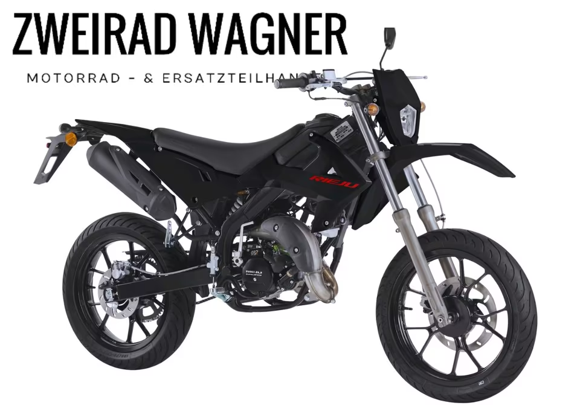

Einstieg
Rieju MRT 50 SM Basis Modell E5+
3.390 €
Das Basismodell der Rieju MRT 50 SM ist der Einstieg in die 50ccm-Welt von Rieju: sportliche Optik, handliches Fahrgefühl und ein attraktiver Einstiegspreis. Ideal für Kunden, die ein neues Rieju-Motorrad suchen und Wert auf persönliche Beratung legen.
- Scheibenbremsen vorne und hinten
- Gewicht ca. 99 kg
- 24 Monate Herstellergarantie laut Anzeige
- Dekorumbauten je nach Absprache möglich